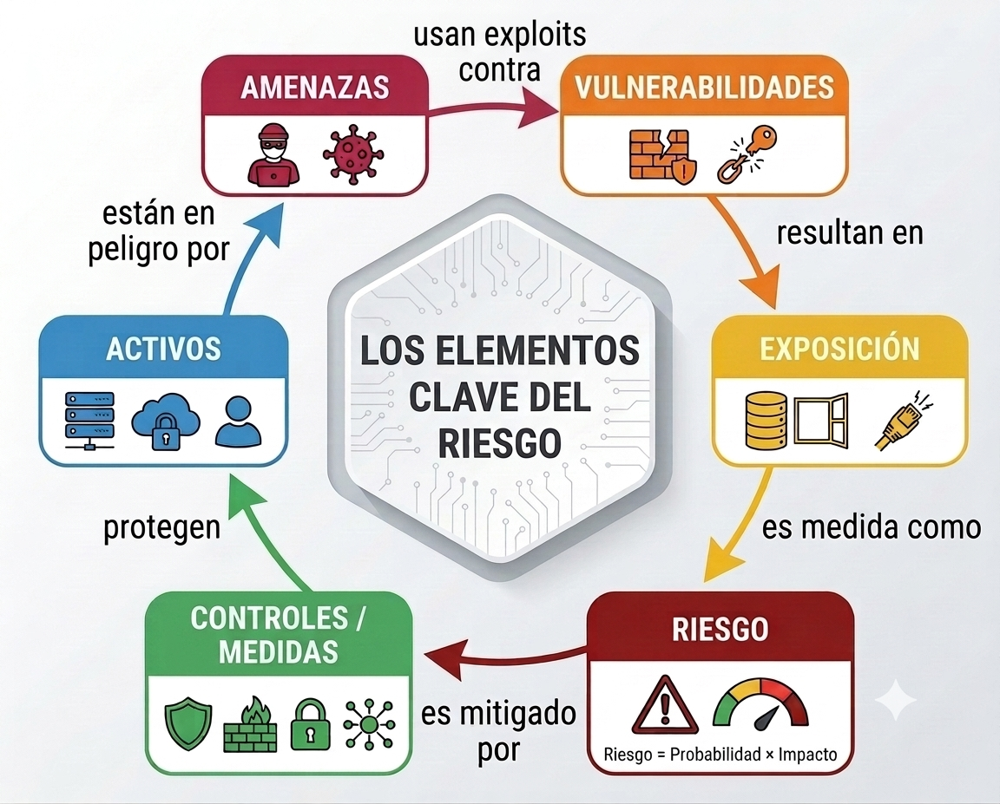

2. Conceptos Fundamentales¶
2.1. El Ecosistema de la Seguridad: Conceptos Clave¶
Para proteger los sistemas informáticos, primero debemos entender los elementos que entran en juego en cualquier incidente de seguridad.
| Concepto | Definición | Ejemplo Práctico |
|---|---|---|
| Activo | Recurso de valor para la organización que debe protegerse. | Datos de clientes, servidores, personal, red local. |
| Vulnerabilidad | Debilidad o fallo en un activo o en sus defensas. | Contraseña "1234", software sin actualizar, puerto abierto. |
| Amenaza | Circunstancia o evento (intencionado o no) que puede aprovechar una vulnerabilidad. | Un hacker, un virus tipo ransomware, un apagón eléctrico. |
| Exploit | Herramienta, script o técnica específica usada para aprovechar una vulnerabilidad técnica. | Un código inyectado en una web para robar la base de datos. |
| Exposición | Situación o grado en el que un activo está desprotegido y es susceptible de sufrir daño si se materializa una amenaza. | Un servidor con datos sensibles conectado directamente a Internet sin un firewall. |
| Control, Medida o Salvaguarda | Medida técnica o humana implementada para mitigar el riesgo. | Antivirus, firewall, copias de seguridad, formación de empleados. |
Definición de riesgo
El nivel de exposición de nuestros activos se mide mediante el Riesgo, que es la posibilidad de que una amenaza aproveche una vulnerabilidad y cause un impacto negativo:
Riesgo = Probabilidad de la amenaza × Impacto del evento

Los elementos del riesgo
2.2. Amenazas Comunes y Medidas de Protección¶
graph TD
%% Definición de estilos con fondos claros para no pelear con el tema de MkDocs
classDef root fill:#dbeafe,stroke:#2563eb,stroke-width:2px
classDef category fill:#f3f4f6,stroke:#4b5563,stroke-width:2px
classDef threat fill:#ffffff,stroke:#9ca3af,stroke-width:2px
%% Nodos principales
A[AMENAZAS COMUNES]:::root --> B(Lógicas / Digitales):::category
A --> C(Físicas y Ambientales):::category
%% Subcategorías Lógicas
B --> B1{Centradas en <br>el Usuario}:::category
B --> B2{Centradas en <br>el Sistema}:::category
B --> B3{Centradas en <br>la Red}:::category
%% Amenazas
B1 --> B1a[Ingeniería Social]:::threat
B1a -. Subtipo .-> B1b[Phishing]:::threat
B2 --> B2a[Malware / Ransomware]:::threat
B2 --> B2b[Fuerza Bruta]:::threat
B3 --> B3a[DoS / DDoS]:::threat
C --> C1[Apagones eléctricos]:::threat
C --> C2[Incendios / Desastres]:::threat
C --> C3[Robo de hardware]:::threat
| Tipo de Amenaza | ¿En qué consiste? | Medida Básica de Protección |
|---|---|---|
| Malware | Software malicioso (virus, troyanos). Destaca el ransomware, que cifra datos y pide un rescate. | Antivirus actualizado, protección EDR y copias de seguridad aisladas. |
| Ingeniería Social | Manipulación psicológica del usuario para que revele información confidencial o permita el acceso. | Políticas claras de seguridad, principio de desconfianza y verificación de identidades. |
| Phishing | (Subtipo de Ingeniería Social). Engaño vía email o SMS suplantando identidad para robar credenciales. | Concienciación del usuario, simulacros y filtros antispam/antiphishing. |
| Fuerza Bruta | Intento de acceso a un sistema probando sistemáticamente combinaciones masivas de contraseñas. | Autenticación Multifactor (MFA), contraseñas robustas y bloqueo tras intentos fallidos. |
| DoS / DDoS | Ataques de Denegación de Servicio. Sobrecarga de un sistema con tráfico masivo hasta dejarlo inaccesible. | Firewalls avanzados y servicios de mitigación perimetral en la nube. |
| Físicas y Ambientales | Amenazas no intencionadas o físicas, como incendios, apagones eléctricos, robo de equipos o rotura de hardware. | Sistemas de Alimentación Ininterrumpida (SAI/UPS), control de acceso físico y redundancia de hardware. |
2.3. Clasificación de las Vulnerabilidades¶
Las vulnerabilidades pueden surgir en diferentes puntos de la infraestructura. Para entenderlas mejor, las dividiremos en tres grandes grupos: tecnológicas, físicas y humanas/organizativas.
graph LR
%% Estilos
classDef root fill:#3b82f6,stroke:#1d4ed8,stroke-width:2px,color:#ffffff,font-weight:bold
classDef category fill:#e5e7eb,stroke:#9ca3af,stroke-width:2px,color:#1f2937,font-weight:bold
classDef node fill:#ffffff,stroke:#d1d5db,stroke-width:1px,color:#374151
%% Nodos
V[VULNERABILIDADES]:::root
T(Tecnológicas):::category
F(Físicas y Hardware):::category
H(Humanas y Organizativas):::category
V --> T
V --> F
V --> H
T --> T1[De Software]:::node
T --> T2[De Configuración]:::node
T --> T3[De Red]:::node
F --> F1[De Hardware]:::node
F --> F2[Físicas]:::node
H --> H1[Humanas]:::node
H --> H2[De Terceros / Cadena de Suministro]:::node2.3.1. Vulnerabilidades Tecnológicas (Lógicas y de Red)¶
Son aquellas que residen en el código, en la configuración de los sistemas o en la transmisión de los datos.
| Tipo | Descripción | Ejemplo / Incidente Relevante |
|---|---|---|
| De Software | Errores de programación en aplicaciones o sistemas operativos (ej. Buffer Overflow o inyección SQL). | Si el fabricante no tiene parche aún, se denomina vulnerabilidad Zero-Day. |
| De Configuración | Dejar valores por defecto (ej. admin/admin), puertos abiertos o servicios innecesarios expuestos a internet. | El caso de la Botnet Mirai, que infectó miles de dispositivos IoT mal configurados. |
| De Red | Transmitir tráfico sin cifrar, lo que permite a un atacante interceptar y modificar comunicaciones. | Ataques Man-in-the-Middle (MitM) en redes Wi-Fi públicas. |
2.3.2. Vulnerabilidades Físicas y de Hardware¶
Afectan a la infraestructura tangible y a los componentes electrónicos.
| Tipo | Descripción | Ejemplo / Incidente Relevante |
|---|---|---|
| De Hardware | Deficiencias en el diseño físico o electrónico de los componentes, como los microprocesadores. | Los fallos de diseño Spectre y Meltdown en procesadores modernos. |
| Físicas | Falta de control de acceso a las instalaciones, centros de datos o cuadros eléctricos. | Robo directo de servidores, portátiles sin cifrar o manipulación de cableado. |
2.3.3. Vulnerabilidades del Factor Humano y Organizativo¶
Relacionadas con las personas que operan los sistemas o con la cadena de proveedores.
| Tipo | Descripción | Ejemplo / Incidente Relevante |
|---|---|---|
| Humanas | Errores del personal por falta de formación, negligencia o manipulación psicológica. | Uso de contraseñas débiles, compartir credenciales o caer en trampas de phishing. |
| De Terceros (Cadena de Suministro) | Fallos de seguridad en empresas proveedoras de software o servicios legítimos en los que confiamos. | El hackeo a SolarWinds, que distribuyó actualizaciones infectadas a miles de empresas. |
2.4. El Sistema CVE y CVSS¶
Para que los técnicos de todo el mundo hablen el mismo idioma al descubrir fallos, existe el estándar CVE (Common Vulnerabilities and Exposures), gestionado por MITRE.
- ¿Qué es un CVE? Es un identificador único asignado a cada vulnerabilidad pública descubierta.
- ¿Qué es el CVSS? Es el sistema que puntúa la gravedad de esa vulnerabilidad en una escala del 0 al 10.
Cómo leer un código CVE
El formato siempre sigue la estructura CVE-[Año]-[Número]. Por ejemplo, el CVE-2017-0144 (responsable del ataque WannaCry) nos indica que fue la vulnerabilidad número 144 registrada en el año 2017.
Escala de Severidad CVSS v3.x:
| Severidad | Puntuación | Impacto en la empresa |
|---|---|---|
| Baja / Ninguna | 0.0 - 3.9 | Asumible. Se monitoriza y se parchea en mantenimientos rutinarios. |
| Media | 4.0 - 6.9 | Requiere planificación para aplicar actualizaciones a corto plazo. |
| Alta | 7.0 - 8.9 | Prioridad alta. Parcheo urgente para evitar compromisos graves. |
| Crítica | 9.0 - 10.0 | Alerta máxima. Requiere aislar sistemas o aplicar parches de emergencia inmediatamente. |
Estar suscrito a bases de datos de vulnerabilidades como el NVD del NIST, el INCIBE o el CCN-CERT es vital para aplicar parches antes de que los atacantes utilicen exploits conocidos contra nuestros sistemas.
2.5. Gestión de Incidentes y Análisis Forense¶
Un incidente de ciberseguridad es cualquier evento que comprometa los tres pilares fundamentales de la información (conocidos como la Tríada CID):
- Confidencialidad: Evitar que personas no autorizadas accedan a los datos (ej. un robo de base de datos).
- Integridad: Garantizar que la información no sea modificada ni destruida (ej. un ransomware que cifra archivos).
- Disponibilidad: Asegurar que los sistemas funcionen cuando se necesitan (ej. un ataque DoS que tumba una web).
Cuando una organización no puede gestionar un incidente por sí misma, debe contactar con los CERTs (Equipos de Respuesta ante Emergencias Informáticas):
- INCIBE-CERT: Se encarga de proteger al sector privado, ciudadanos y empresas.
- CCN-CERT: Está enfocado en proteger a las Administraciones Públicas.
2.5.1. Fases del Análisis Forense¶
Cuando ocurre un incidente grave, se realiza un análisis forense para investigar cómo ocurrió, quién es el responsable y aportar pruebas válidas en un procedimiento judicial. Sus fases fundamentales son:
- Adquisición de datos: Hacer una copia exacta (clonado bit a bit) de los discos sin encender el sistema original para no alterar los datos.
- Preservación (Cadena de Custodia): Custodiar la evidencia y documentar quién la ha tocado en todo momento, usando bloqueadores de escritura mecánicos para garantizar que no se modifique ni un solo byte de la prueba original.
- Análisis: Buscar rastros del ataque en los registros (logs), archivos modificados y memoria RAM para reconstruir la línea temporal de los hechos.
- Documentación y Presentación: Elaborar un informe pericial detallado con validez legal que explique lo sucedido de forma comprensible para un juez.
Ejercicios ¶
- Ej 2.1 Identificación y Análisis de Vulnerabilidades y Amenazas
- Ej 2.2 Monitorización y Análisis de Incidentes de Ciberseguridad con RSS
Bibliografía ¶
-
INCIBE - Gestión de riesgos
- NIST National Vulnerability Database (NVD)
- CVSS Calculator
- Centro criptológico nacional (CCN): https://www.ccn-cert.cni.es/